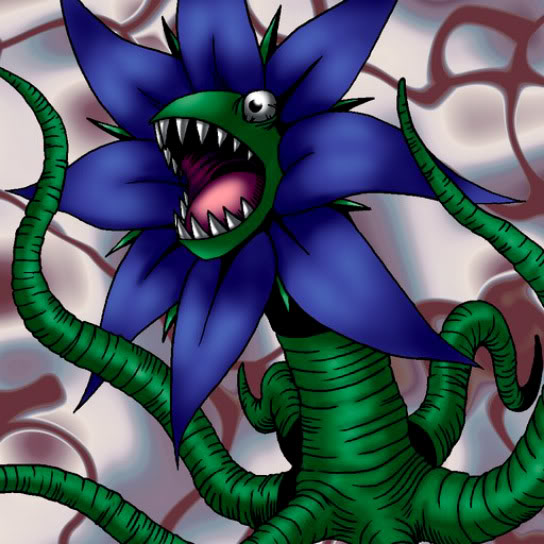

Tentacle Plant

STATS
ATK: 500
DEF: 600DECK COST
Deck Cost per Card: 11Fusion List (31 Possible Fusions)
- Tentacle Plant + Armed Ninja = Bean Soldier
- Tentacle Plant + Blackland Fire Dragon = B. Dragon Jungle King
- Tentacle Plant + Candle of Fate = Firegrass
- Tentacle Plant + Claw Reacher = Rose Spectre of Dunn
- Tentacle Plant + Clown Zombie = Pumpking the King of Ghosts
- Tentacle Plant + Dancing Elf = Queen of Autumn Leaves
- Tentacle Plant + Dark Gray = Flower Wolf
- Tentacle Plant + Doron = Bean Soldier
- Tentacle Plant + Fiend's Hand = Wood Remains
- Tentacle Plant + Fire Reaper = Wood Remains
- Tentacle Plant + Flame Ghost = Pumpking the King of Ghosts
- Tentacle Plant + Flame Snake = Firegrass
- Tentacle Plant + Little Chimera = Flower Wolf
- Tentacle Plant + Magical Ghost = Pumpking the King of Ghosts
- Tentacle Plant + Mechaleon = Snakeyashi
- Tentacle Plant + Midnight Fiend = Rose Spectre of Dunn
- Tentacle Plant + Milus Radiant = Flower Wolf
- Tentacle Plant + Mystical Sheep #2 = Flower Wolf
- Tentacle Plant + Shadow Specter = Wood Remains
- Tentacle Plant + Silver Fang = Flower Wolf
- Tentacle Plant + Sinister Serpent = Snakeyashi
- Tentacle Plant + Skull Servant = Wood Remains
- Tentacle Plant + Skull Stalker = Bean Soldier
- Tentacle Plant + Synchar = Flower Wolf
- Tentacle Plant + The Shadow Who Controls the Dark = Rose Spectre of Dunn
- Tentacle Plant + The Wandering Doomed = Wood Remains
- Tentacle Plant + Trap Master = Bean Soldier
- Tentacle Plant + Waterdragon Fairy = Queen of Autumn Leaves
- Tentacle Plant + Wicked Mirror = Rose Spectre of Dunn
- Tentacle Plant + Wolf = Flower Wolf
- Tentacle Plant + Wood Remains = Pumpking the King of Ghosts